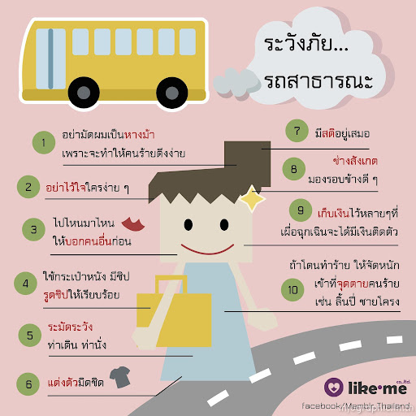
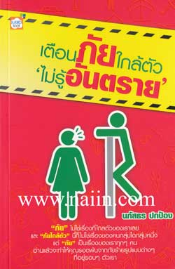

เด็กติดยาเสพติด
ประเภทของยาเสพติด
- ออกฤทธิ์กดประสาท เช่น ฝิ่น มอร์ฟิ่น เฮโรอีน เซโคบาร์ทิบาท (บาร์บิทูเรต) เหล้าแห้ง หรือโซโคบาล ทำให้ประสาทมึนชา สมอง อารมณ์ จิตใจ เฉื่อยชา
- ออกฤทธิ์กระตุ้นประสาท เช่น แอมเฟตามีน กระท่อม โคเคน พวกยาม้า ยาขยัน กระตุ้นเร่งประสาททำให้เกิดนิ่ว ตื่นตัว กระวนกระวาย ประสาทไหวตัวอยู่เสมอ
- ออกฤทธิ์หลอนประสาท เช่น แอลเอสดี ทำให้เกิดประสาทหลอนเห็นภาพผิดไปจากปกติ
- ออกฤทธิ์ผสมผสานกัน ทั้งกดประสาท กระตุ้นประสาท และหลอนประสาท เช่น กัญชา
อาการ
- เด็กที่ติดยาเสพติดมีลักษณะอาการที่สังเกตเห็นได้หลายชนิด ทั้งทางด้านร่างกายและพฤติกรรมแสดงออกดังนี้
- หน้าตาเฉยเมยแบบคนที่มีความทุกข์
- ผอมซีด สุขภาพทรุดโทรม
- ความประพฤติเปลี่ยนไป ละเลยกิจวัตรประจำวัน ระเบียบวินัยลดหย่อน
- กลายเป็นคนเจ้าอารมณ์ หงุดหงิด ฉุนเฉียว ผิดปกติ โมโหง่า ย
- มีลับลมคมใน ชอบแยกตัวอยู่คนเดียวเงียบๆ
- เบื่อหน่ายการงานและการเรียน ไม่มีแรง อ่อนเพลีย
- มักมียา อุปกรณ์แปลกๆเก็บไว้ในห้องส่วนตัว
- อาจมีอุปกรณ์เกี่ยวกับยาเสพติด เช่น กระดาษ ตะกั่ว หลอดกาแฟ ไม้ขีด หลอดฉีดยา เป็นต้น
- ใช้เงินเปลืองผิดปกติ มีหนี้สิน บางครั้งขโมย
- สวมแว่นกันแดดตลอดเวลา เพื่อซ่อนแก้วตาที่วาว เบิกกว้างหรือริบหรี่
- ใส่เสื้อแขนยาวตลอดเวลา เพื่อปกปิดรอยเข็มที่ฉีดยา
- มักชอบอยู่ในห้องเก็บของ ซ่อนตัวอยู่ในห้อง อยู่หลังส้วมเพื่อแอบสูบบุหรี่ เสพยา
- ถ้าอยู่ในห้องเรียน เด็กจะเกียจคร้าน ง่วงหงาวหาวนอน ตาหรี่ เพราะสู้แสงไม่ได้ เรียนหนังสือไม่รู้เรื่อง
ล่วงละเมิดทางเพศ
Sexual Harassment หมายถึง พฤติกรรมที่ฝ่ายหนึ่งแสดงออกถึงนัยยะทางเพศ ทำให้เหยื่อรู้สึกไม่ดี ถูกคุกคาม ไม่ปลอดภัย หรือถูกลดทอนศักดิ์ศรีคุณค่าความเป็นมนุษย์ Sexual Harassment มีหลายประเภท คนส่วนใหญ่มักคิดว่าจะแสดงออกทางร่างกายเท่านั้น แต่จริงๆ แล้วมีอีกหลายรูปแบบซึ่งสร้างบาดแผลทางใจให้กับเหยื่อได้เช่นกัน
การกระทำแบบไหนที่เรียกว่าเข้าข่าย?
1. สัมผัสทางกาย เป็นการใช้อวัยวะส่วนใดส่วนหนึ่งของผู้กระทำ ไปสัมผัสกับร่างกายของเหยื่อ ซึ่งไม่ได้ขออนุญาตก่อน เช่น เเตะเนื้อต้องตัว การลูบไล้ โดยอวัยวะที่ใช้มีได้หลายส่วน เช่น มือ ขา สะโพก
2. คำพูด เป็นรูปแบบที่พบได้บ่อยในชีวิตประจำวัน เช่น หยอกล้อกันทางคำพูดทั้งทางตรง ทางอ้อม เล่นมุกตลกเรื่องเพศ เช่น “ทำไมแบนเหมือนไม้กระดาน” “เห็นแล้วแข็งเลย” เมื่อเหยื่อทำท่าไม่พอใจหรือสีหน้าไม่ดี ผู้กระทำมักจะพูดแก้ตัว เช่น “ล้อเล่นน่า” “คิดมากไปได้”
3. สายตาเเละสีหน้า เป็นรูปแบบที่ระบุได้ยาก ผู้กระทำส่งสายตาหรือแสดงออกทางสีหน้าที่ส่อถึงเรื่องทางเพศ โดยที่เหยื่อรู้ตัวหรือไม่รู้ก็ได้ หากเหยื่อเห็นจะเกิดความรู้สึกหวาดกลัว ขยะแขยง เช่น การแลบลิ้นเลียรอบปาก การจ้องมองที่หน้าอก
4. ข้อความที่เขียนหรือพิมพ์ ทั้งในโลกจริงและโลกออนไลน์ เป็นข้อความที่สื่อถึงเรื่องทางเพศ ในโลกจริงอาจเป็นข้อความในโพสต์อิท เศษกระดาษที่ส่งไปให้เหยื่อ เช่น “ขอจับที” ส่วนในโลกออนไลน์มีได้หลายแบบ เช่น คอมเมนต์ การแชท ตัวอย่างเช่น บุคคลสาธารณะที่เจอข้อความแทะโลม “ผัวแห่งชาติ” “ขอพี่สักครั้ง”
5. ท่าทาง ท่าทางเชิงสัญลักษณ์ที่เป็นรู้กันว่ามีความหมายทางเพศ เช่น ใช้มือสองข้างวางไว้ซ้อนกันเป็นมือบนมือล่าง แล้วตบดังป้าบๆ ท่าโยกสะโพก
การโดนบูลลี่
- การบูลลี่ไม่ได้มีอยู่แค่ในโลกไซเบอร์ แต่เกิดขึ้นได้ทุกที่ในโลกความจริง ไม่ว่าจะเป็นในสถานศึกษา หรือที่ทำงาน และเกิดขึ้นมานานแล้ว
- การรับมือการ บูลลี่ อย่างมีสติ เงียบเฉย ตอบโต้ ชี้แจงให้ถูกจังหวะ ไม่คิดแค้น เครียด หรือวิตกกังวลเกินไป รวมถึงเลือกที่จะใช้ชีวิตในสังคมสิ่งแวดล้อมที่ดี ปิดรับเรื่องราวทางโซเชียลบ้าง หากหาทางออกไม่ได้ ควรพบแพทย์เพื่อรับการรักษาอย่างเหมาะสม
ปัจจุบันเราได้ยินคำว่า “Bully” บ่อยครั้ง เนื่องจากทุกวันนี้ผู้คนสื่อสารกันผ่านโลกไซเบอร์กันมาก จนคิดว่าเป็นแค่การบูลลี่ในโลกไซเบอร์ แต่ในความจริงแล้ว การบูลลี่ก็เกิดขึ้นได้ทุกที่ในชีวิตประจำวัน ไม่ว่าจะเป็นในสถานศึกษา หรือที่ทำงาน และเกิดขึ้นมานานแล้ว
